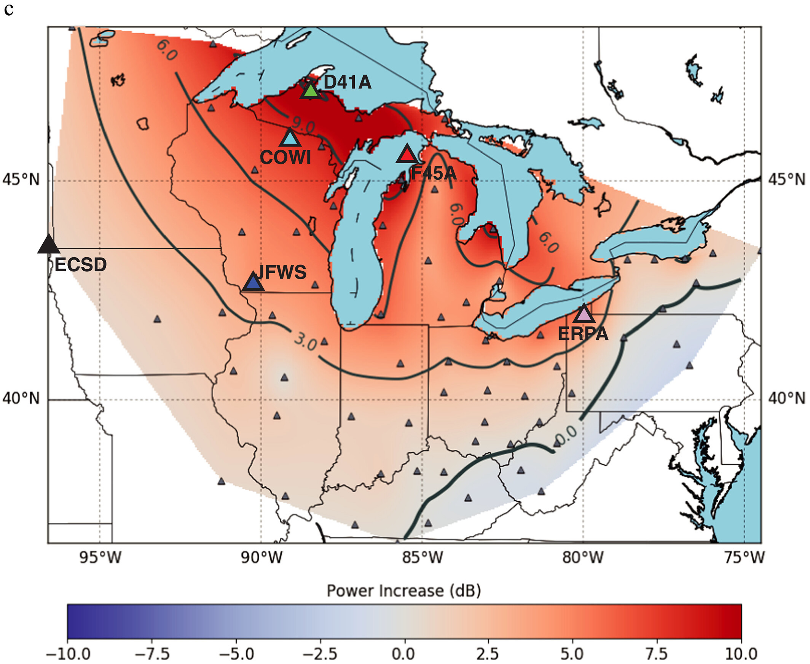
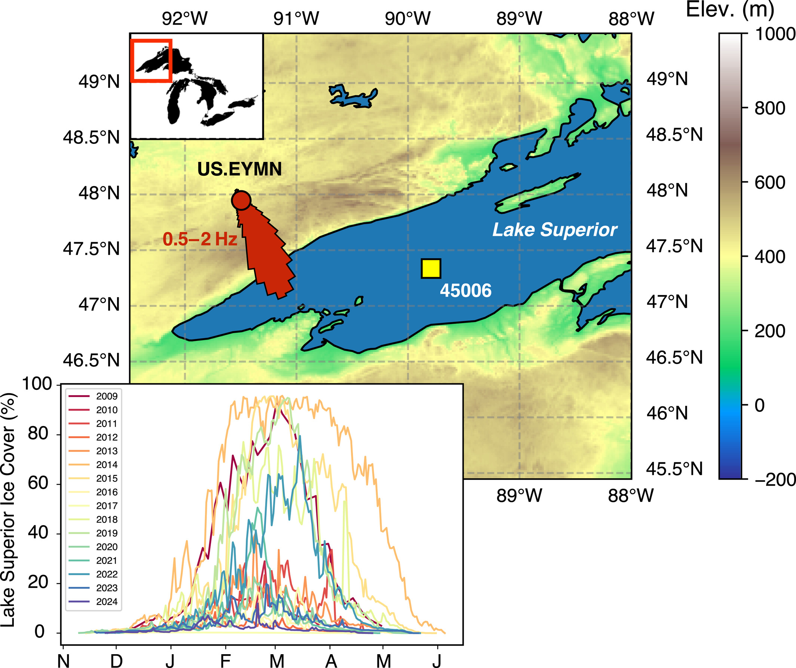

Lakes are Surprisingly Noisy
When we think of earthquakes, we imagine faults rupturing deep beneath Earth’s surface. Yet many of the vibrations recorded by seismometers are generated by something much closer to the surface—waves crashing into one another and along the shorelines of oceans and large lakes.As wind-driven waves interact, they transmit energy into the solid Earth as tiny vibrations called microseisms that continually shake the ground. Although too small to be felt by people, these signals can travel hundreds of kilometers and are recorded as a constant hum at seismic stations.
Rather than treating this background “noise” as an inconvenience, seismologists increasingly use it as a valuable source of information about both Earth’s interior and the surface processes that generate it.
The Great Lakes of North America provide an ideal natural laboratory for studying these signals as they undergo dramatic seasonal changes. Every winter, large portions of the lakes freeze, fundamentally altering how wind, waves, and ice interact with the solid Earth.
What Happens When a Lake Freezes?

Microseisms ultimately derive their energy from waves moving across open water. As ice forms, it reduces the surface area available for wind to generate wave systems, altering the strength and distribution of seismic energy transmitted into the surrounding crust.This suggests an intriguing possibility: could we estimate nearby lake ice cover simply by listening to variations in lake microseism strength?
To answer this question, we compared continuous seismic observations with satellite-derived ice cover and buoy measurements of wind and wave conditions spanning multiple winters across the Great Lakes.